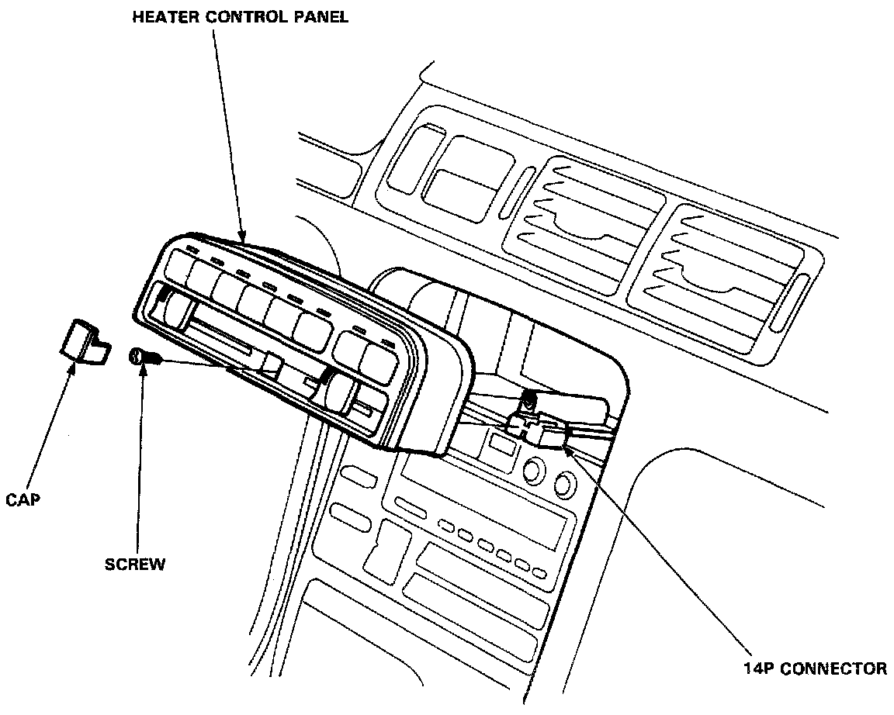

Control Assembly: Service and Repair
HEATER CONTROL PANEL
Removal
CAUTION: Be careful not to damage the dashboard.
1. Remove the cap and screw, then pull out the heater control panel.
2. Disconnect the heater control panel connector.
3. Reverse procedure to install.